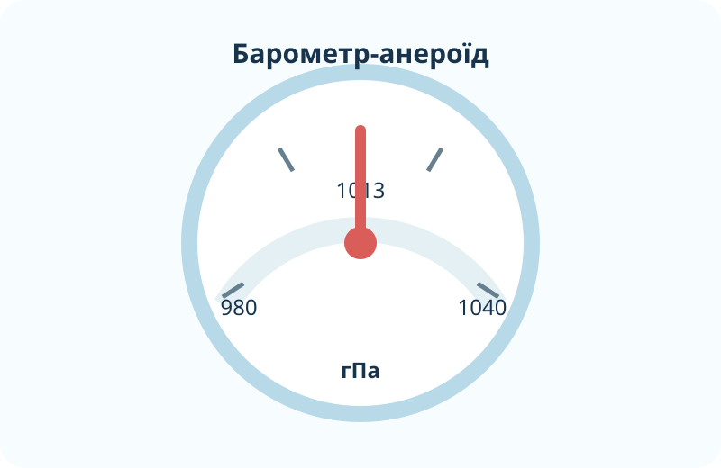

Що штовхає картон угору?
Домашня модель
- Наповніть склянку водою майже до краю.
- Накрийте щільною карткою.
- Притискаючи картку, переверніть склянку.
- Обережно відпустіть картку над раковиною.
Дослід виконуйте без скла над електронікою; краще з пластиковою склянкою.
Яке пояснення найсильніше?
Знімаємо покази барометра

Інтерактивний барометр
Близько стандартного тиску на рівні моря.
У метеорології часто використовують гектопаскалі (гПа); 1 гПа = 1 мбар.
Як тиск змінюється з висотою?
Підніміться в тропосфері
Чому тиск падає?
На більшій висоті над точкою залишається менший стовп повітря. Тому вага повітря над одиницею площі менша.
NASA: у тропосфері тиск з висотою зменшується не лінійно, а приблизно експоненційно.
Модель атмосфери NASA ↗Шкільна задача
Для наближених задач у 6 класі користуємося правилом: біля поверхні Землі тиск зменшується приблизно на 1 мм рт. ст. на кожні 10–12 м підйому. Якщо біля підніжжя 760 мм рт. ст., а на вершині 700 мм рт. ст., оцініть висоту за правилом 12 м/мм.
Тиск на погодній карті зараз
Знайдіть область високого та низького тиску. Не плутайте тиск станції на її висоті з приведеним до рівня моря тиском: для погодних карт метеостанційні значення часто приводять до спільного рівня.
«Барометр показав менше — значить погода обов’язково погіршується»?
Ви піднялися з долини на 900 м. Барометр показав нижчий тиск. Чи можна лише з цього факту довести наближення циклону?
Подивіться модель атмосфери NASA
Earth Atmosphere Model
Коротко перегляньте інтерактивну модель NASA Glenn і простежте одночасну зміну висоти, температури й тиску.
Відкрити модель / матеріал NASA ↗Формулюємо правила
Атмосферний тиск
Тиск, який атмосфера чинить на поверхню Землі та всі тіла в ній через вагу повітря.
Барометр
Прилад для вимірювання атмосферного тиску. Поширені ртутні та анероїдні барометри.
З висотою
Тиск зменшується, бо над точкою стає менше повітря. Точна залежність нелінійна й залежить також від температури.
Чому на вершині гори атмосферний тиск нижчий, ніж біля її підніжжя?
§27 + спостереження за тиском
- Опрацюйте §27.
- Якщо маєте барометр або погодний застосунок — запишіть тиск у той самий час два дні поспіль.
- Поясніть, чому порівнювати тиск у двох містах різної висоти без поправки може бути некоректно.
- Розв’яжіть: різниця тиску 45 мм рт. ст.; оцініть перепад висот за правилом 12 м/мм.
Фінальна перевірка
Тест відкриється лише після заповнення прізвища, імені та класу.